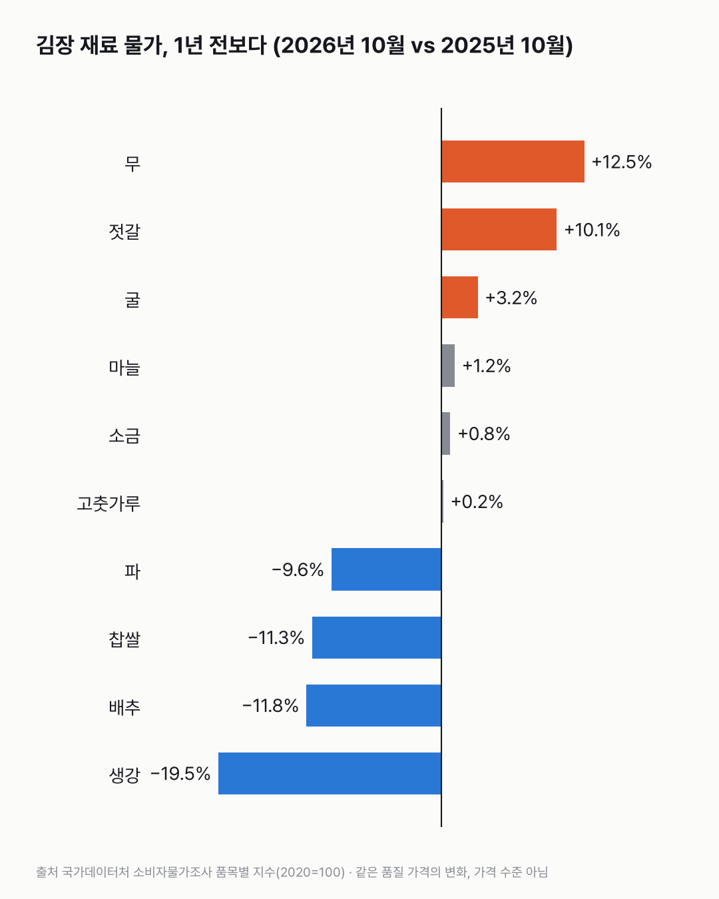
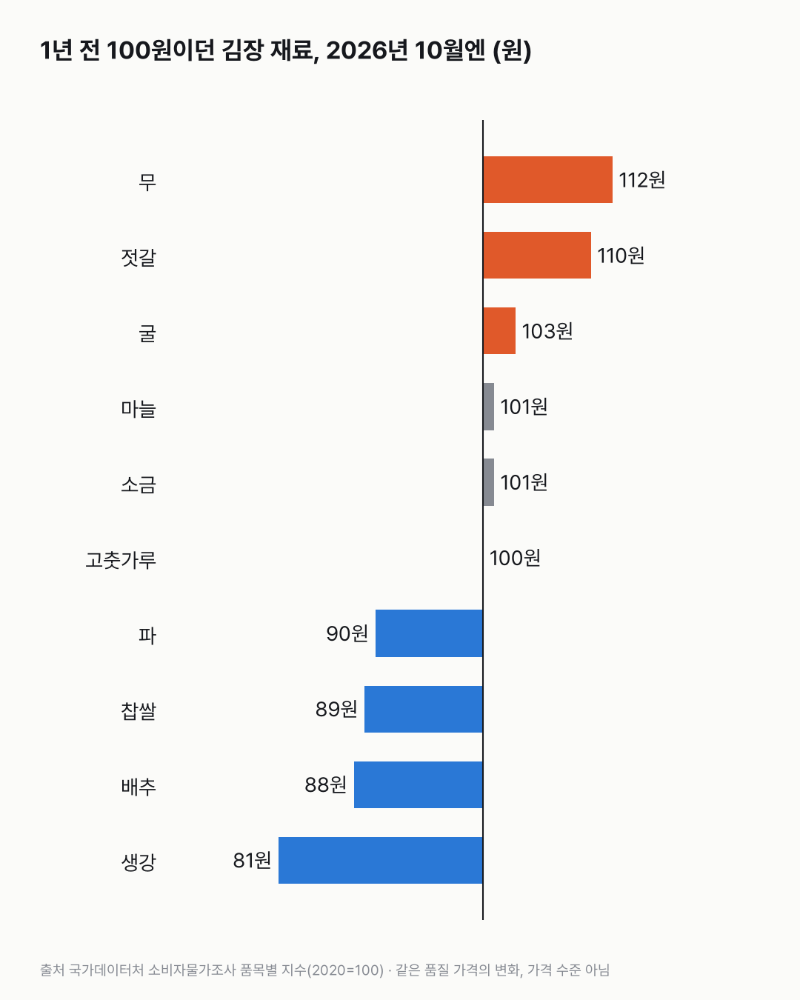
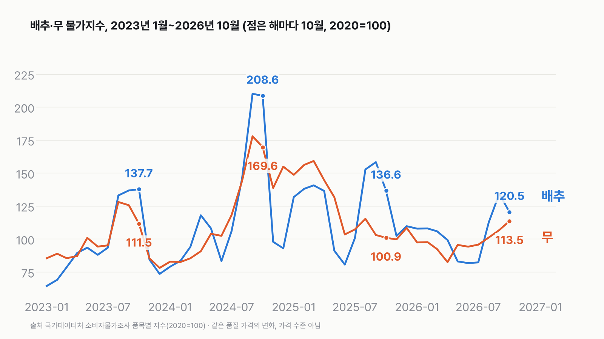

올해 김장 재료값, 작년보다 오를까 내릴까?
'김장값이 올랐다, 내렸다'를 한마디로 말하기 어려워요. 장바구니에서 무엇이 많이 차지하느냐에 따라 체감이 달라요. 배추를 많이 사는 집은 덜 들고, 무·젓갈을 많이 쓰는 집은 더 들 수 있어요.

3줄 요약
- 2026년 10월 소비자물가로 보면, 배추는 1년 전보다 11.8% 내리고 무는 12.5%, 젓갈은 10.1% 올랐어요.
- 1년 전 100원어치였던 배추는 88원, 무는 112원, 젓갈은 110원이 됐어요. 고춧가루·소금·마늘은 거의 그대로예요.
- 가정에서 김치를 직접 담그는 비율은 올해 58.6%로, 1년 전보다 100가구당 5.6가구 줄었어요(농식품부·해수부 발표).
품목마다 방향이 달라요
2026년 10월 값을 1년 전 같은 달과 견줬어요.
| 품목 | 1년 새 변화 | 1년 전 100원이던 것 |
|---|---|---|
| 생강 | −19.5% | 81원 |
| 배추 | −11.8% | 88원 |
| 찹쌀 | −11.3% | 89원 |
| 파 | −9.6% | 90원 |
| 고춧가루 | +0.2% | 100원 |
| 소금 | +0.8% | 101원 |
| 마늘 | +1.2% | 101원 |
| 굴 | +3.2% | 103원 |
| 젓갈 | +10.1% | 110원 |
| 무 | +12.5% | 112원 |
| (참고) 전체 물가 | +2.8% | 103원 |
- 내린 건 배추, 생강, 찹쌀, 파예요.
- 고춧가루·소금·마늘은 1% 안팎으로 거의 그대로예요.
- 오른 건 무와 젓갈이에요. 둘 다 10% 넘게 올라 전체 물가(2.8%)보다 많이 올랐어요.


무는 '올랐다'지만, 기준이 된 작년이 낮았어요
배추와 무의 물가지수(2020년 = 100)를 해마다 10월끼리 보면 이래요.
| 10월 | 배추 | 무 |
|---|---|---|
| 2023년 | 137.7 | 111.5 |
| 2024년 | 208.6 | 169.6 |
| 2025년 | 136.6 | 100.9 |
| 2026년 | 120.5 | 113.5 |
- 무는 1년 전보다 12.5% 올랐지만, 2026년 10월 지수 113.5는 2023년 10월(111.5)과 비슷하고 2024년 10월(169.6)보다는 한참 낮아요. 1년 전(100.9)이 낮았던 해예요.
- 배추는 2024년 10월에 208.6까지 올랐다가 2025년 136.6, 2026년 120.5로 2년 연속 내려왔어요.
- 무는 올해 3~4월엔 1년 전보다 40% 넘게 낮았고, 8월까지도 1년 전보다 낮았어요. 9월(+3.6%)부터 1년 전보다 높아졌어요.


생산 전망과 10월 물가는 따로 봐요
농식품부·해수부는 11월 3일 올해 가을배추 생산을 121.4만 톤(전년보다 18.5% 증가), 가을무를 37.2만 톤(11.1% 증가)으로 내다봤어요. 그런데 10월 무 물가지수는 1년 전보다 높았어요. 생산 전망은 가을 수확 전체이고, 물가는 10월 한 달 값이라 두 숫자가 가리키는 때가 달라요. 왜 이렇게 움직였는지는 이 자료로 알 수 없어요. 11월 물가는 12월 초에 나와요.
직접 담그는 집은 줄고 있어요
같은 발표에서 올해 가정에서 김치를 직접 담그는 비율은 58.6%였어요. 10가구 중 6가구 남짓이에요. 1년 전보다 100가구당 5.6가구 줄었어요. 4인 가구 김장 규모는 23.4포기로 작년(23.5포기)과 거의 같아요. 정부는 10월 28일부터 12월 2일까지 김장 재료와 수산물 할인에 640억 원을 지원해요.
숫자를 다시 보며
물가지수는 '얼마'가 아니라 '같은 품질의 값이 얼마나 변했나'예요. 그래서 이 글로는 올해 김장에 모두 얼마가 드는지 알 수 없어요. 우리 집 김장 장바구니에서 배추가 크면 덜 들고, 무와 젓갈이 크면 더 들 수 있어요. 올해 김장, 하시나요?
이 숫자는 어디서 왔나요
출처
어떻게 셌나요
- 품목별 물가: 국가데이터처 소비자물가조사 품목별 지수(2020 = 100, 전국). 2026년 10월 ÷ 2025년 10월 − 1로 '1년 새 변화'를 냈어요.
- '100원이던 것': 1년 전 100원어치가 같은 품질로 지금 얼마인지예요. 100 × (1 + 1년 새 변화)를 반올림했어요.
- 김장 공식 숫자: 농식품부·해수부 「김장재료 수급안정대책」(2026-11-03) 보도의 숫자를 그대로 옮겼어요. 직접 담그는 비율은 한국농촌경제연구원 조사를 인용한 값이에요.
- 김장 비용 합계(한 집에 얼마)는 공식 원문을 찾지 못해 쓰지 않았어요.
| 항목 | 값 | 잰 것 / 가정 |
|---|---|---|
| 배추·무·젓갈 1년 새 변화(2026-10) | −11.8% · +12.5% · +10.1% | 잰 것(소비자물가조사) |
| 전체 물가 1년 새 변화(2026-10) | +2.8% | 잰 것 |
| 직접 담그는 비율(2026) | 58.6% (1년 전보다 100가구당 5.6가구 감소) | 공식 발표 인용 |
| 가을배추·가을무 생산(2026) | 121.4만 톤(+18.5%) · 37.2만 톤(+11.1%) | 공식 발표의 전망 |
한계 5가지
이 데이터로 말할 수 없는 것
- 물가지수는 가격 수준이 아니라 같은 품질 가격의 변화예요. 품목끼리 '어느 게 더 비싸다'는 비교는 할 수 없어요.
- 전국 평균이에요. 지역·가게마다 값은 달라요.
- 10월 값이라 김장이 몰리는 11월 값과 다를 수 있어요.
- 생산량은 전망치예요.
- 값이 움직인 이유는 이 자료에 없어요.
새 글 나오면 받아 보기
피드 리더 앱에 이 사이트 주소를 한 번 넣어 두면, 새 글이 올라올 때 앱에 떠요. 가입이나 메일 주소는 필요 없어요.
받는 법 보기
- 피드 리더 앱을 하나 골라요. 새 글을 모아 보여 주는 앱이에요. 예를 들면 Feedly나 Inoreader가 있어요. 둘 다 무료고 웹·휴대폰에서 써요.
- 앱에서 '구독 추가'(+)를 누르고 아래 주소를 붙여 넣어요.
- 끝이에요. 새 글이 올라오면 앱 목록에 떠요.
https://protofu.github.io/opendata-insight/feed.xmlFeedly를 쓴다면 여기를 눌러 바로 추가할 수도 있어요.